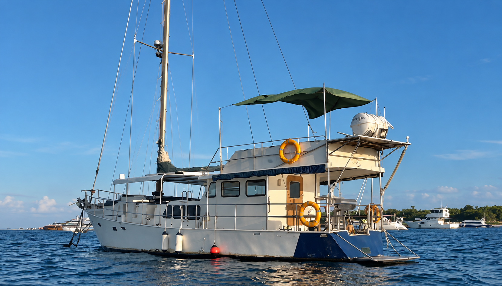
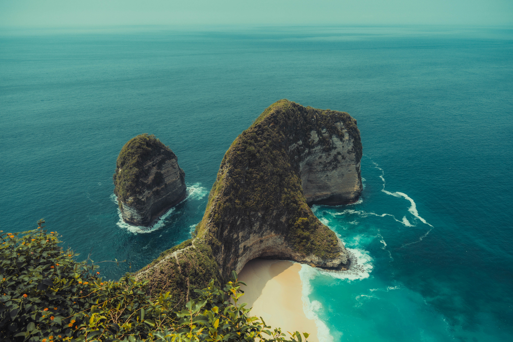
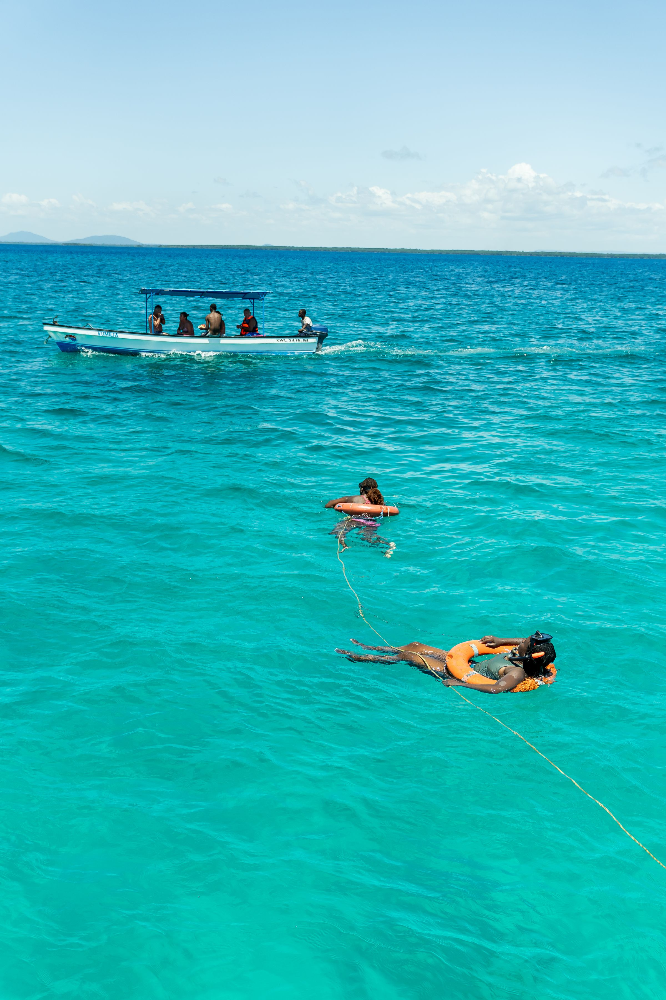
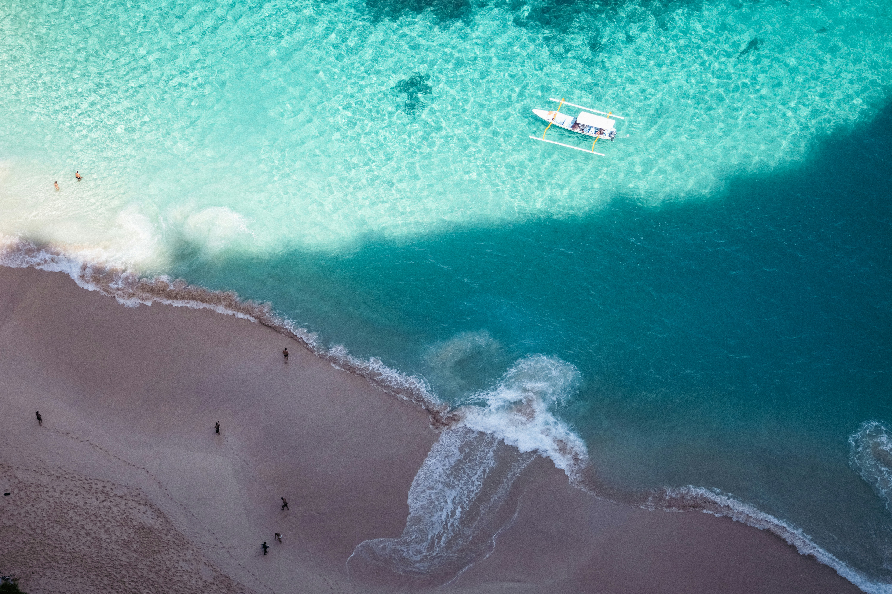
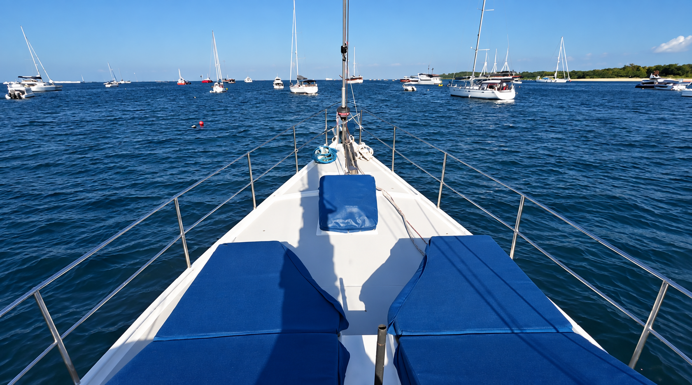
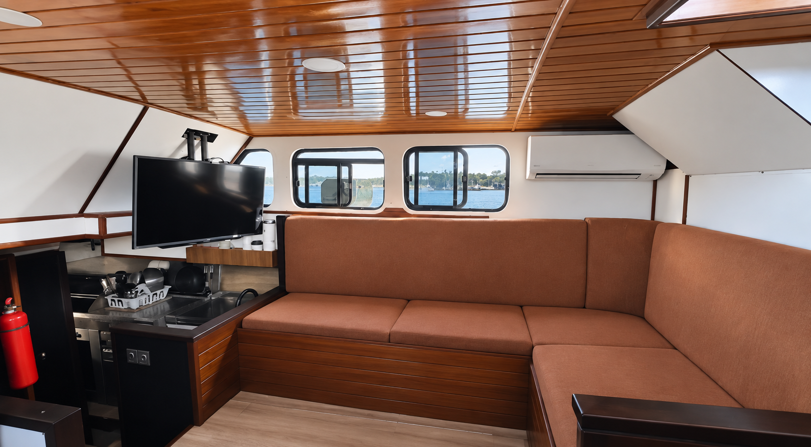
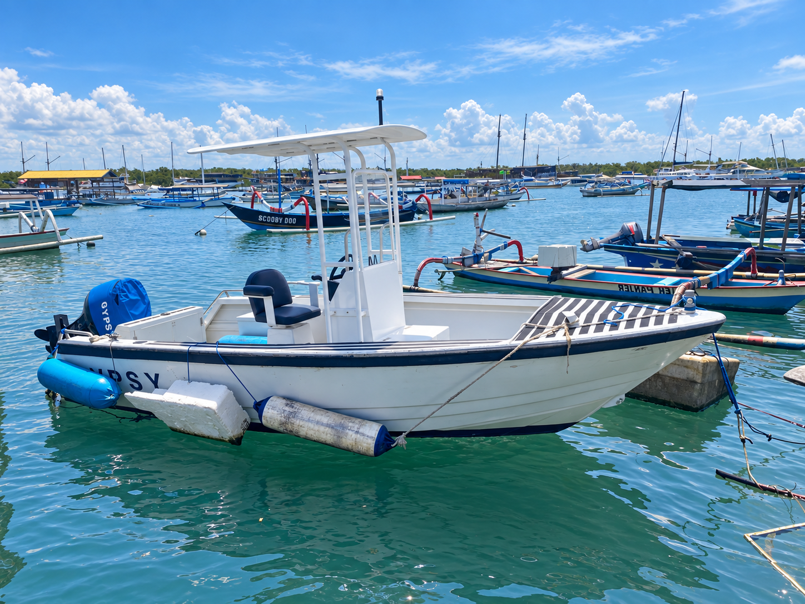
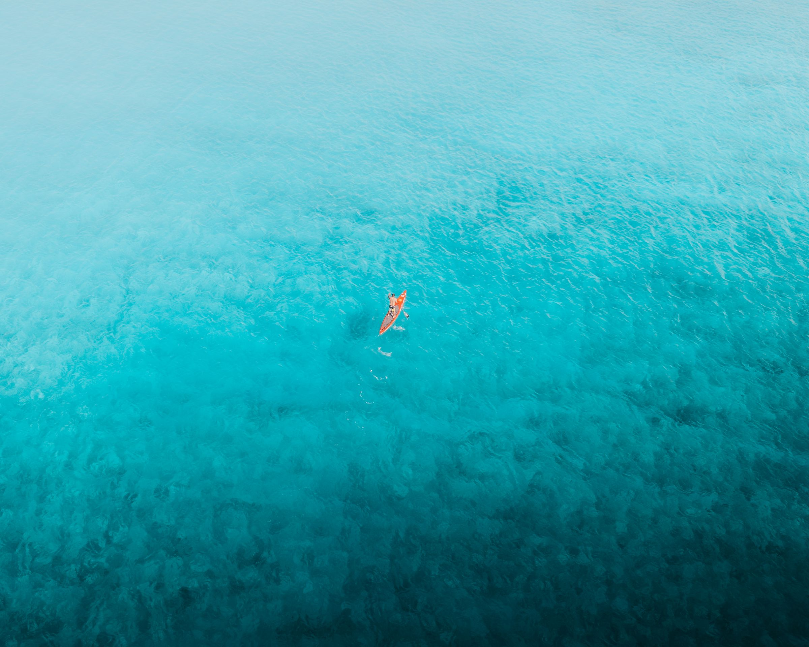
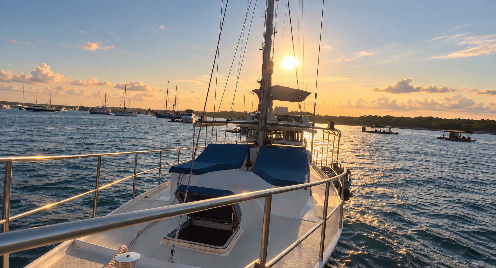

Start easy
Step aboard in Mushroom Bay and settle in.
Find a place on deck, get comfortable and let the day begin from the water rather than from a timetable.

Private Day Charter
Take Gypsy Laut out privately and shape the day around what you feel like doing — swimming, exploring, heading ashore or simply finding somewhere good to stop.
Plan Your DayMushroom Bay Nusa Lembongan
Your boat for the day
A private day aboard Gypsy Laut gives you the freedom to explore without building the whole experience around a fixed group-tour schedule.
Start from Mushroom Bay and shape the day around the conditions, the group and what sounds good. Swim from the boat, head towards Lembongan or Penida, stop somewhere for lunch, explore the water or simply find a quiet place to settle in for a while.
Some days are active. Some are slow. Most end up being a bit of both.

The day, your way
The point of going private is being able to change the plan.
Start easy
Find a place on deck, get comfortable and let the day begin from the water rather than from a timetable.
Get out there
Swim, snorkel, explore ashore or use the tender to get closer to the places Gypsy Laut cannot.

Stop when it feels right
There is no need to rush from stop to stop simply because an itinerary says so.
Stay out a little longer

The boat as your base
Gypsy Laut gives you somewhere to actually spend the day, not just transport between destinations.
At 65 feet, there is room to spread out across the bow, upper deck and outdoor lounging areas, retreat inside when you want shade or simply stay aboard while the water moves around you.
The indoor saloon, air conditioning, Starlink and onboard facilities mean the boat remains comfortable even when the day is not spent constantly moving.



Island access
The main tender is a 5.2 metre aluminium centre-console powered by a 90hp Suzuki.
It connects Gypsy Laut with shore, beaches, surf breaks, snorkelling areas and other places where a smaller boat makes more sense.
That means the day does not have to be limited by where the main vessel can anchor. Go ashore when you want. Head back out when you are ready.
A 3 metre aluminium dinghy with a 15hp engine provides additional boat-to-shore access.
On the water

Get into the water around Lembongan and Penida when conditions allow.
Use the tender to reach nearby breaks or arrange a local surf guide when wanted.
Paddle boards are aboard for calmer water.
Beaches, lunch stops and island time are always part of the option.
Scuba experiences can be arranged through selected premium local dive partners.
Fishing can form part of the day where appropriate and permitted.
Food aboard
Gypsy Laut has a fully functional kitchen with a gas stove and oven, a BBQ, three fridges and a full-size chest freezer.
For a private day charter, food and provisioning can be arranged around what you have in mind.
You can keep things simple, cook aboard, arrange something in advance or discuss having a private chef aboard.
Aboard

Stay out late
Ask about a private sunset experience from Mushroom Bay.
Sometimes the best plan is simply to head out, find a good place on the water and watch the light change.
Before you head out
Private day charters are shaped around the guests, timing, conditions and what is practical on the day.
Tell us your preferred date, group size and what you would like to do, and we can help shape the day around that.
Routes and activities may change with weather, sea conditions, timing, conservation rules and local operating considerations.
Transfers, provisioning, private chef arrangements and other requests can be discussed separately.
Start a Conversation
Tell us your preferred date, group size and what sounds good. We’ll help shape the day around the conditions and the kind of experience you want.
Plan a Private Day